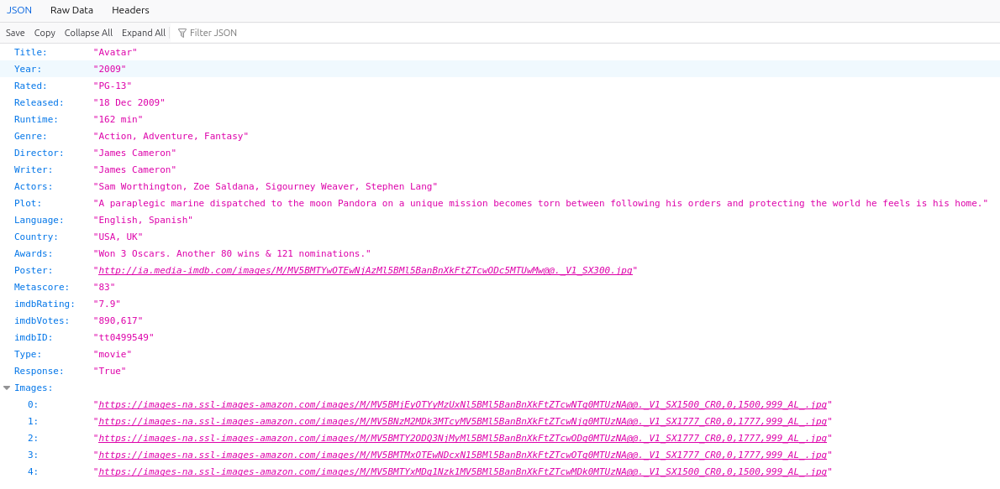
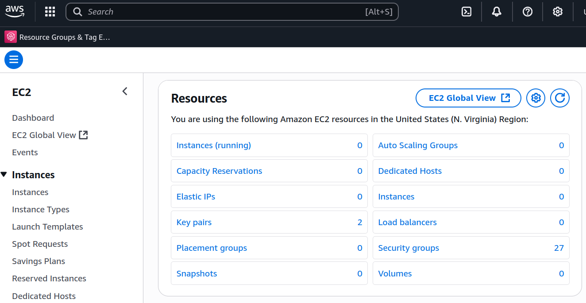
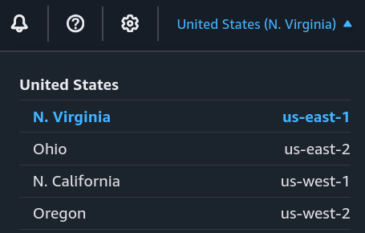
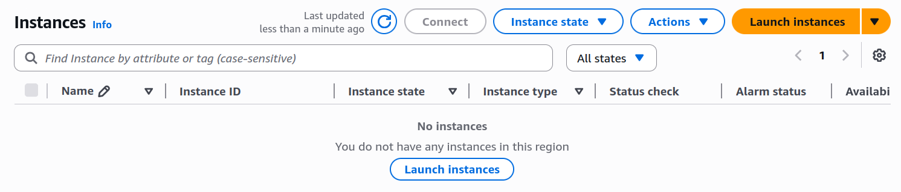
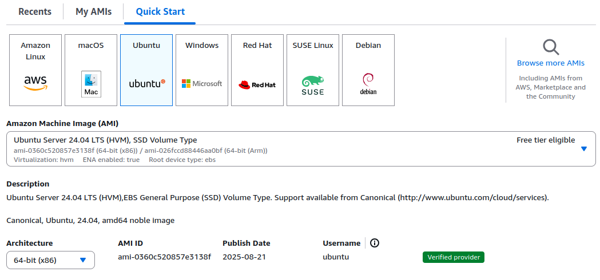
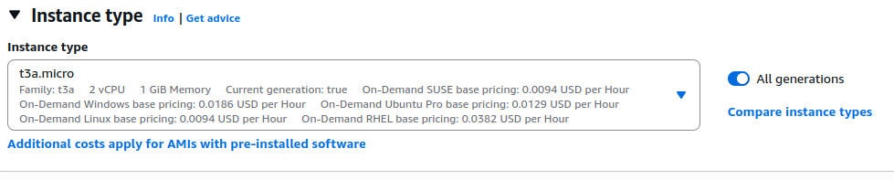
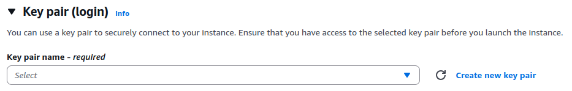
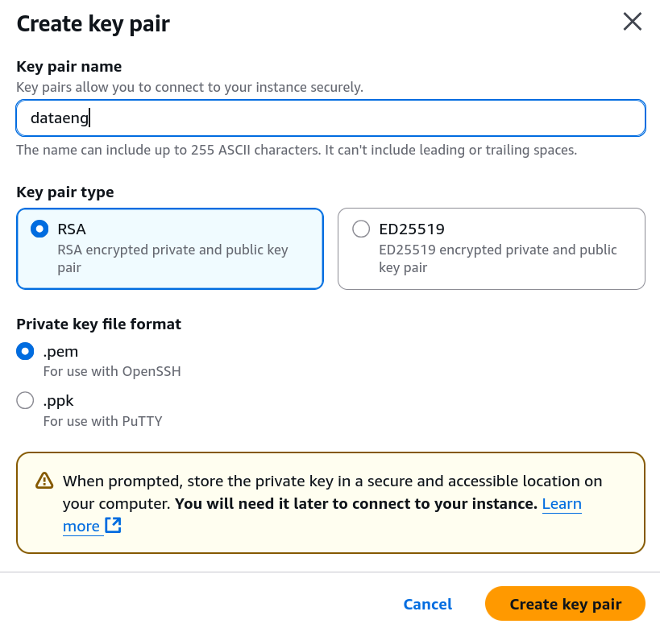
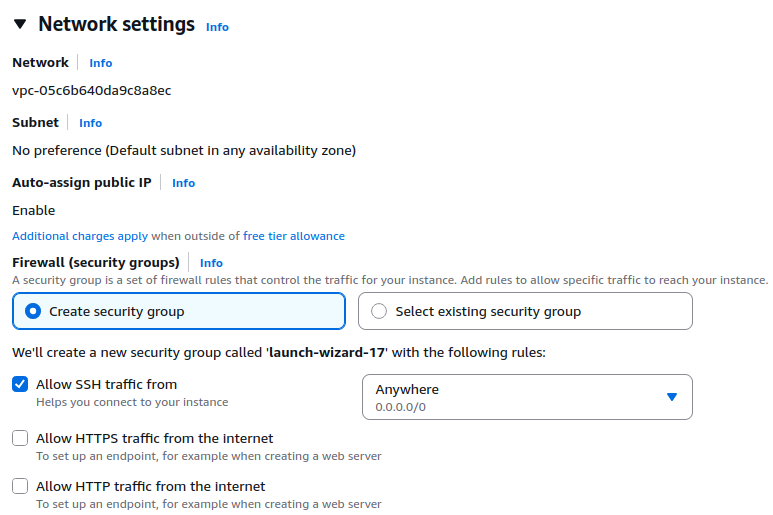

Prática
API de filmes
Para a prática, iremos utilizar uma API de filmes.
Ela, construída em fastapi, será responsável por fornecer informações sobre filmes, como título e ano de lançamento. As informações serão lidas a partir de um JSON.
Perigo!
Se fizer esta aula pela metade, não deixe VMs em execução.
Confira o comando para parar a VM ao final da página. Você também pode utilizar o console (menu superior Instance state / Stop instance).
Qualquer dúvida, entre em contato com o professor.
Antes de realizarmos o deploy na AWS, vamos testar localmente e garantir que funciona. Para isso:
Exercício
Exercício
Exercício
Exercício
Answer
No exemplo do avatar, você deve ver algo como:

Agora que conferimos a API localmente, vamos explorar o console da AWS.
Exercise
Explorando o Console
O console da AWS é uma interface gráfica baseada na web que permite gerenciar e interagir com os serviços da AWS.
Vamos explorar o console para entender melhor como ele funciona. Com login realizado na conta da AWS, encontre o link AdministratorAccess para acessar o console.
EC2
No console da AWS, navegue até o serviço EC2 (pela barra de busca). Você deve ver um painel como:

O EC2 (Elastic Compute Cloud) é um serviço que fornece capacidade de computação escalável na nuvem.
Ele permite que os usuários criem e gerenciem instâncias de servidores virtuais (VMs, instâncias EC2).
As instâncias EC2 podem ser configuradas com diferentes tipos de hardware, sistemas operacionais e softwares, permitindo que os usuários personalizem suas aplicações de acordo com suas necessidades.
Criar instância
Vamos criar uma instância para fazer deploy da nossa API de filmes. Inicialmente, vamos criar recursos utilizando o console da AWS.
Região
Após acessar o EC2, garanta que está na região N. Virginia (us-east-1). Esta informação estará disponível no menu superior direito.

Exercise
Instâncias
No menu esquerdo, clique em Instances (Instâncias). Você deve ver um painel como:

Criação
Clique em Launch Instances (Iniciar Instâncias) para criar uma nova instância.
A primeira configuração necessária será a escolha do sistema operacional. Escolha conforme a imagem (Ubuntu 24.04 LTS):

Em seguida, escolha o tipo de instância, que delimita o hardware da sua instância. Escolha uma t3a.micro.

Exercise
Answer
A arquitetura da t3a.micro é AMD64 (x86_64), aquela que estudaram em SisHard!
A arquitetura das instâncias t4g.* é ARM64 (aarch64).
Então, vamos escolher a chave mestre para acessar a instância. Isto será feito pela criação de uma key pair.

Clique em Create new key pair (Criar novo par de chaves).

Exercise
Atenção
Salve a chave privada (*.pem) em um local seguro.
Você precisará dela para acessar sua instância.
Não compartilhar
Nunca compartilhe sua chave privada com ninguém!
Nas configurações de rede, configure conforme a imagem:
Atenção
Geralmente, utilizar regras de acesso SSH de qualquer IP (0.0.0.0/0) não é recomendado em ambientes de produção.

Após isso, clique em Launch Instances (Iniciar Instâncias) para criar a instância!
Exercise
Acesso SSH
Vamos realizar acesso via SSH. Para isso, garanta que você tem a chave privada (.pem) que foi gerada durante a criação da instância, com as permissões corretas.
Atenção
Os comandos abaixo entendem que o arquivo da chave privada está localizado na pasta de trabalho atual.
Caso tenha movido para, por exemplo, ~/.ssh/, atualize os comandos.
Exercise
Atenção!
Os próximos comandos devem ser executados dentro da sessão SSH.
Ou seja, na VM!
Exercise
Configurando a API
Agora que você tem acesso à VM, vamos clonar o repositório da API e testar se ele funciona corretamente.
Exercise
Exercise
Exercise
Exercise
Provavelmente não irá funcionar. Por questão de segurança, o EC2 bloqueia o acesso à porta 8000 por padrão. Para resolver isso, você precisará ajustar as regras de segurança do grupo de segurança associado à sua instância.
Exercise
Exercise
Exercise
Configuração de serviço
Exercise
Answer
O usuário que roda o processo da API é o usuário ubuntu.
Como o usuário ubuntu tem permissões de administrador, isso pode representar um risco de segurança.
É recomendável criar um usuário específico para rodar a API com permissões limitadas.
Vamos fazer isto e além, criaremos um serviço para nossa API.
Exercise
Answer
Um serviço é um programa que roda em segundo plano e é gerenciado pelo sistema operacional.
Ele é projetado para fornecer funcionalidades específicas e pode ser iniciado automaticamente na inicialização do sistema.
Criar usuário
O usuário para rodar o serviço da API será chamado uapi. Seus arquivos estarão localizados na pasta /srv/movies-api.
Exercise
Exercise
Exercise
Ambiente virtual API
Vamos criar um ambiente virtual para o serviço
$ sudo -u uapi bash -lc 'curl -LsSf https://astral.sh/uv/install.sh | sh'
$ sudo -u uapi bash -lc 'export PATH="$HOME/.cargo/bin:$PATH"; uv venv /srv/movies-api/app/.venv'
$ sudo -u uapi bash -lc 'export PATH="$HOME/.cargo/bin:$PATH"; uv pip install -r /srv/movies-api/app/requirements.txt --python /srv/movies-api/app/.venv/bin/python'
$ sudo apt-get update && sudo apt-get install -y python3-venv
$ sudo -u uapi python3 -m venv /srv/movies-api/app/.venv
$ sudo -u uapi bash -lc '/srv/movies-api/app/.venv/bin/pip install --upgrade pip'
$ sudo -u uapi bash -lc '/srv/movies-api/app/.venv/bin/pip install -r /srv/movies-api/app/requirements.txt'
Criar serviço
Para criar um serviço Linux, precisamos criar um arquivo de configuração na pasta /etc/systemd/system/.
Exercise
Exercise
Answer
O usuário que roda a API é o uapi.
Agora que o serviço foi criado, precisamos recarregar o systemd para reconhecer o novo serviço.
Exercise
Exercise
Exercise
Exercise
Exercise
Exercise
Exercise
Fazendo a limpa
EC2 é caro!
Serviços de computação em nuvem, como o EC2 da AWS, podem gerar custos significativos.
Certifique-se de parar ou encerrar instâncias que não estão em uso para evitar cobranças desnecessárias.
Vamos fazer isto utilizando o AWS CLI.
Exercise
Exercise
Info!
Por enquanto, não é necessário remover a instância. Existem gastos associados à instâncias paradas, mas eles são muito menores do que instâncias em execução.
Apesar de não ser necessário, você pode fazer isso a qualquer momento utilizando o comando:
Atenção
No comando abaixo, substitua i-00c68fbac******** pelo ID da instância que você deseja remover.
Este comando é irreversível e resultará na perda de todos os dados armazenados na instância (EBS) se a instância estiver com DeleteOnTermination habilitado.
Confira utilizando o comando:
Conclusão
Esta foi nossa primeira experiência com o EC2. Por enquanto, a configuração envolveu etapas manuais, não automatizadas. Trabalharemos nesse tópico nas próximas aulas!
Outras ideias que poderiam ter sido exploradas (você pode tentar, só não deixe a VM ligada continuamente!):
- Configurar um servidor web, como Nginx, Apache ou Caddy, para servir a API.
- Configurar um domínio personalizado para a API, com reverse proxy. Você pode conseguir um provisório com o DuckDNS.
- Configurar https para seu domínio personalizado. Uma dica é utilizar o certbot Let's Encrypt.